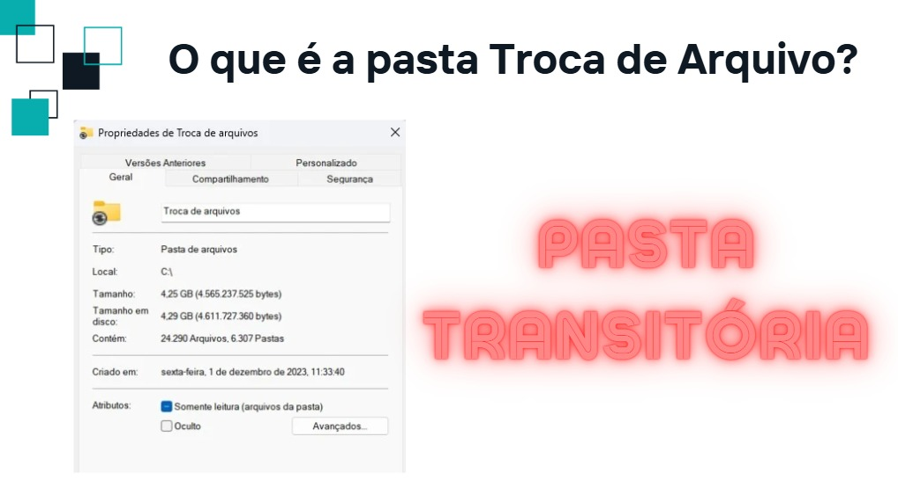
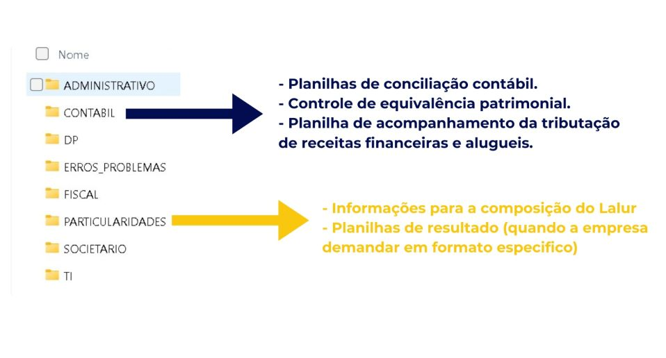
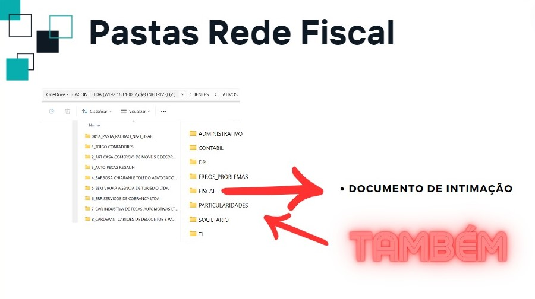
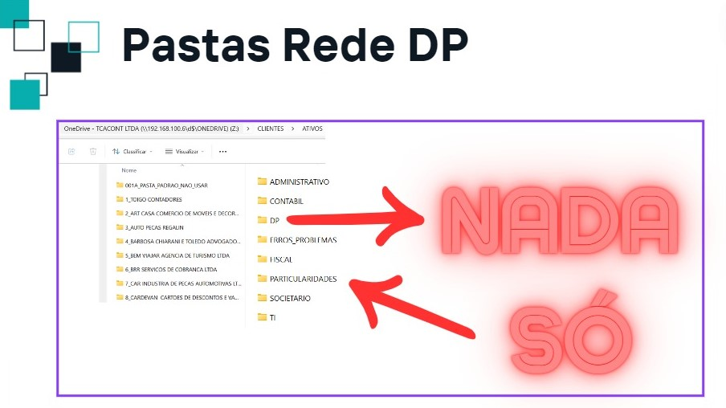

FAQ APP TCA
No início do expediente, você deve verificar se há solicitações pendentes e começar a atendê-las. Aproximadamente 30 minutos antes do final do expediente, é importante revisar os chamados ainda pendentes para garantir sua devida organização.
Olá,
Recebi sua solicitação. Até o prazo de [X], irei atendê-lo(a).
Qualquer dúvida, estou à disposição!
Olá,
Devido a [motivo X, motivo Y, motivo Z], precisaremos alterar o prazo para atender à sua demanda.
Agradeço muito pela sua compreensão.
Prezado [Cliente],
Precisamos do seu retorno até a [data X] referente à demanda solicitada para que possamos concluir
a entrega sem causar problemas à sua empresa.
Agradeço pela compreensão e aguardo seu retorno.
Olá,
Sua solicitação será transferida para o departamento [X] devido a [motivo Y].
Qualquer dúvida, estou à disposição!
Olá [Nome do Cliente],
Para garantir a segurança dos seus dados conforme a LGPD, solicitamos gentilmente
que os documentos e informações relacionados aos seus serviços de contabilidade sejam
enviados exclusivamente através do portal da TCA. Isso nos permite manter a
confidencialidade e oferecer um serviço mais eficiente.
Estamos à disposição para ajudar no processo de transição, caso precise de suporte.
Agradecemos a compreensão e colaboração!
Olá, tudo bem?😊
Para manter um atendimento mais organizado e eficiente, nossas comunicações por chamada são realizadas através
do número oficial da empresa ou por meio dos nossos ramais.
Caso precise falar conosco por ligação, por favor, utilize o seguinte número de contato para
ligação: [INSERIR NÚMERO DO RAMAL AQUI]. Estaremos prontos para atendê-lo(a)!
Qualquer dúvida, estou à disposição! Desejo uma excelente semana para você! 🌟
Olá, tudo bem?😊
Claro que podemos ajudar! Para garantir um atendimento ágil e organizado,
todas as solicitações de retrabalho precisam ser registradas no nosso portal.
Isso nos ajuda a acompanhar as demandas com qualidade e atender você da melhor forma possível!
Já estou enviando a solicitação no APP para que você possa autorizar a OS de retrabalho.
Assim que recebermos o OK por lá, daremos andamento imediatamente e liberamos pra você!
Qualquer dúvida, estou à disposição! Desejo uma excelente semana para você! 🌟
Olá, tudo bem?😊
Claro que podemos ajudar! Para garantir um atendimento ágil e organizado,
todas as solicitações de retrabalho precisam ser registradas no nosso portal.
Isso nos ajuda a acompanhar as demandas com qualidade e atender você da melhor forma possível!
Já estou enviando a solicitação no APP para que você possamos registrar a demanda.
Assim, daremos andamento imediatamente e liberamos pra você!
Qualquer dúvida, estou à disposição! Desejo uma excelente semana para você! 🌟
Olá,
Agradecemos o seu contato e interesse em nossos serviços. Sua solicitação será prontamente
encaminhada ao nosso setor de Sucesso do Cliente,
que cuidará de todo o processo com dedicação.
No momento, sua empresa ainda está em fase de ativação no nosso sistema,
o que significa que, por enquanto, não podemos avançar com as demandas.
Mas não se preocupe! Assim que tudo estiver devidamente liberado,
entraremos em contato para informar que estamos prontos para atender todas as suas necessidades.
Estamos ansiosos para colaborar com o seu sucesso e agradecemos muito pela sua compreensão!
Olá,
Agradecemos por entrar em contato conosco e compartilhar suas preocupações
sobre a utilização da nossa nova ferramenta de comunicação.
Pedimos desculpas por qualquer inconveniente que isso possa ter causado
e gostaríamos de assegurar-lhe que estamos aqui para ajudá-la.
Queremos destacar alguns benefícios importantes:
Rastreabilidade: Todas as suas interações são registradas, facilitando o acompanhamento
e garantindo que nada será perdido.
Segurança: A ferramenta oferece um ambiente seguro,
protegendo suas informações sensíveis contra acessos não autorizados.
Agilidade no Atendimento: Com a centralização das comunicações, todos os nossos analistas
podem acessar o histórico de suas solicitações,
proporcionando um atendimento mais rápido e eficiente.
Todos os nossos colaboradores possuem um Termo de Confidencialidade
e são certificados em conformidade com a Lei Geral de Proteção de Dados (LGPD).
Essas medidas garantem que todas as suas informações estão protegidas contra acessos não autorizados
e são tratadas com o mais alto nível de sigilo e responsabilidade. Estamos comprometidos em garantir
a segurança e confidencialidade das suas informações e em proporcionar a melhor experiência
de atendimento possível.
Nosso time de suporte está à disposição para oferecer treinamentos e assistência adicional.
Por favor, não hesite em nos contatar para qualquer dúvida ou ajuda.
Qualquer dúvida, estou à disposição!
Troca de arquivos
A pasta "troca de arquivos" é uma área transitória
destinada apenas para o compartilhamento temporário de documentos entre máquinas.
Por favor, evitem manter arquivos permanentemente nessa pasta.
Estamos implementando verificações semanais para realizar a limpeza automática.
Assim, certifiquem-se de transferir qualquer documento importante para os locais
apropriados antes dessa verificação.

O que salvar na nuvem?
Não deve ser salvo nada do que foi enviado ou recebido pelo APP TCA.
Departamento Contábil
Quais são as pastas que devem ou não ser utilizadas pelo contábil?

Departamento Fiscal
Quais são as pastas que devem ou não ser utilizadas pelo fiscal?

Departamento Pessoal
Quais são as pastas que devem ou não ser utilizadas pelo DP?
